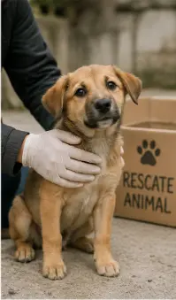
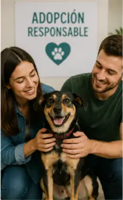
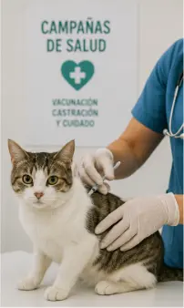
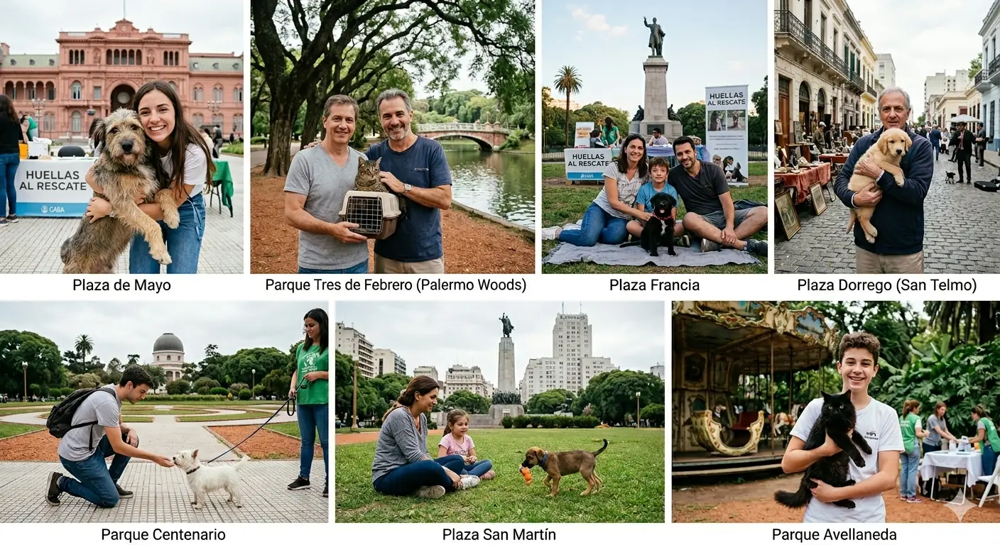

¿Quiénes somos?
Huellas al Rescate es una ONG dedicada a rescatar perros y gatos en situación de abandono, brindándoles atención veterinaria y encontrando familias responsables para su adopción.
Nuestra misión
Promover el cuidado y respeto por los animales, reduciendo la cantidad de animales en la calle mediante rescate, rehabilitación y adopción responsable.
Nuestros programas
-
Rescate de animales en situación de calle

-
Programa de adopción responsable

-
Campañas de vacunación y castración

Conocé nuestro trabajo
